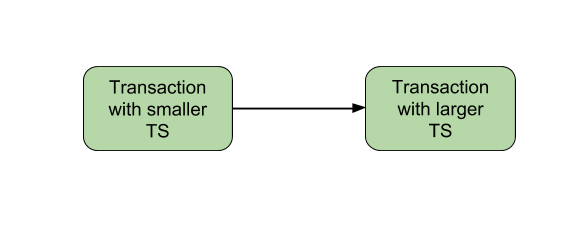

Concurrency Control can be implemented in different ways. One way to implement it is by using Locks. Now, lets discuss about Time Stamp Ordering Protocol.
As earlier introduced, Timestamp is a unique identifier created by the DBMS to identify a transaction. They are usually assigned in the order in which they are submitted to the system. Refer to the timestamp of a transaction T as TS(T). For basics of Timestamp you may refer here.
Timestamp Ordering Protocol –
The main idea for this protocol is to order the transactions based on their Timestamps. A schedule in which the transactions participate is then serializable and the only equivalent serial schedule permitted has the transactions in the order of their Timestamp Values. Stating simply, the schedule is equivalent to the particular Serial Order corresponding to the order of the Transaction timestamps. Algorithm must ensure that, for each items accessed by Conflicting Operations in the schedule, the order in which the item is accessed does not violate the ordering. To ensure this, use two Timestamp Values relating to each database item X.
- W_TS(X) is the largest timestamp of any transaction that executed write(X) successfully.
- R_TS(X) is the largest timestamp of any transaction that executed read(X) successfully.
Basic Timestamp Ordering –
Every transaction is issued a timestamp based on when it enters the system. Suppose, if an old transaction Ti has timestamp TS(Ti), a new transaction Tj is assigned timestamp TS(Tj) such that TS(Ti) < TS(Tj).The protocol manages concurrent execution such that the timestamps determine the serializability order. The timestamp ordering protocol ensures that any conflicting read and write operations are executed in timestamp order. Whenever some Transaction T tries to issue a R_item(X) or a W_item(X), the Basic TO algorithm compares the timestamp of T with R_TS(X) & W_TS(X) to ensure that the Timestamp order is not violated. This describe the Basic TO protocol in following two cases.
- Whenever a Transaction T issues a W_item(X) operation, check the following conditions:
- If R_TS(X) > TS(T) or if W_TS(X) > TS(T), then abort and rollback T and reject the operation. else,
- Execute W_item(X) operation of T and set W_TS(X) to TS(T).
- Whenever a Transaction T issues a R_item(X) operation, check the following conditions:
- If W_TS(X) > TS(T), then abort and reject T and reject the operation, else
- If W_TS(X) <= TS(T), then execute the R_item(X) operation of T and set R_TS(X) to the larger of TS(T) and current R_TS(X).
Whenever the Basic TO algorithm detects twp conflicting operation that occur in incorrect order, it rejects the later of the two operation by aborting the Transaction that issued it. Schedules produced by Basic TO are guaranteed to be conflict serializable. Already discussed that using Timestamp, can ensure that our schedule will be deadlock free.
One drawback of Basic TO protocol is that it Cascading Rollback is still possible. Suppose we have a Transaction T1 and T2 has used a value written by T1. If T1 is aborted and resubmitted to the system then, T must also be aborted and rolled back. So the problem of Cascading aborts still prevails.
Let’s gist the Advantages and Disadvantages of Basic TO protocol:
- Timestamp Ordering protocol ensures serializablity since the precedence graph will be of the form:

Image – Precedence Graph for TS ordering - Timestamp protocol ensures freedom from deadlock as no transaction ever waits.
- But the schedule may not be cascade free, and may not even be recoverable.
Strict Timestamp Ordering –
A variation of Basic TO is called Strict TO ensures that the schedules are both Strict and Conflict Serializable. In this variation, a Transaction T that issues a R_item(X) or W_item(X) such that TS(T) > W_TS(X) has its read or write operation delayed until the Transaction T‘ that wrote the values of X has committed or aborted.
Related GATE Questions –
- GATE | GATE CS 2010 | Question 20
- GATE | GATE-CS-2017 (Set 1) | Question 46
- GATE | GATE-IT-2004 | Question 21
Reference: Database System Concepts, Fifth Edition [Silberschatz, Korth, Sudarshan], Chapter-16